결정 모델(Decision Model)은 글을 생성하지 않고 보기마다 확률을 돌려주는 작은 모델입니다. 결정 모델이 무엇인지, 직접 실행할 수 있는 오픈소스 모델 네 가지와 Strands Decider v2가 어떻게 다른지 정리하고 8종을 RAGTruth 환각 탐지로 테스트해 보았습니다. 정확도가 가장 높은 Strands Decider v2 12B와 Jeeves 9B는 같은 87.6%였고 요청당 시간은 0.13초와 13.3초였습니다.A decision model is a small model that generates no text and returns a probability for each option. This post explains what a decision model is and how four open models you can run yourself and Strands Decider v2 differ, and then tests eight of them on RAGTruth hallucination detection. The two most accurate, Strands Decider v2 12B and Jeeves 9B, scored the same 87.6%, at 0.13 s and 13.3 s per request.
RAG 애플리케이션은 답변이 검색한 문서에 근거하는지를 요청마다 확인해야 하고 이 확인을 큰 LLM에 맡기면 요청마다 시간과 비용이 더 듭니다. 결정 모델(Decision Model)은 이런 판단만 빠르게 처리하도록 만든 작은 모델이고 2026년 9월에 TypeSafe의 Jev가 나온 뒤로 오픈소스 모델이 잇달아 공개됐습니다.
오픈소스 결정 모델은 여러 가지이고 크기도 322M부터 31B까지 다양합니다. 어느 모델을 고를지 판단하려고 여덟 개를 같은 환각 탐지 문제로 테스트했습니다. 정확도가 가장 높은 두 모델은 같은 87.6%였고 요청당 시간은 0.13초와 13.3초로 약 100배 차이였습니다.
테스트 결과를 보기 전에 결정 모델이 무엇인지, 테스트한 오픈소스 모델이 어떻게 다른지부터 설명합니다.
01
결정 모델은 글을 생성하지 않습니다. 읽을 내용(상태)과 질문, 보기를 받으면 보기마다 확률을 계산해 돌려줍니다. LLM 평가기가 판정을 문장으로 작성하는 동안 결정 모델은 forward pass 한 번으로 답을 냅니다.
Arize의 벤치마크에 따르면 상위 결정 모델의 환각 탐지 정확도는 LLM 평가기와 오차 범위 안에 있고 LLM 평가기는 비용이 60배에서 400배 더 듭니다.
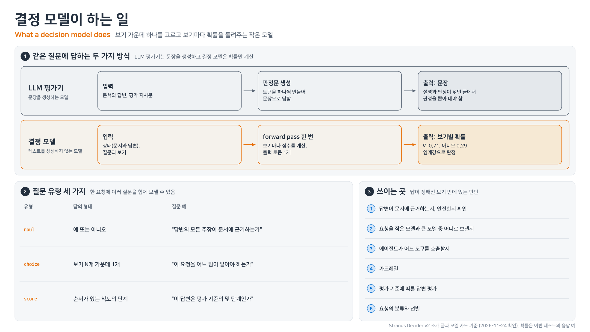
질문 유형은 세 가지입니다. 예 또는 아니오로 답하는 noul, 보기 가운데 하나를 고르는 choice, 순서가 있는 척도에서 단계를 고르는 score입니다. 답이 정해진 보기 안에 있는 판단에 맞는 모델이어서 근거 확인, 가드레일, 모델 라우팅, 도구 선택, 답변 평가에 사용합니다.
환각 탐지에서는 검색한 문서와 답변을 상태로 주고 예 또는 아니오 질문 하나를 묻습니다.
POST /v1/systemone
{
"state": {"context": "...", "answer": "..."},
"questions": {
"q": {"type": "noul", "instructions": "Is every claim in the answer supported by the context?"}
}
}Strands Decider v2 E2B는 이 요청에 이렇게 응답했습니다.
{
"model": "strands-decider-E2B-gemma4-v2-2611",
"answers": {"q": {"type": "noul", "noul": 0.7146}},
"usage": {"input_tokens": 1186, "output_tokens": 1},
"latency_ms": 59.43
}noul 값 0.7146이 예일 확률입니다. 이 값이 임계값 이상이면 답변이 문서에 근거한다고 판정합니다. 출력 토큰이 1개여서 이 요청은 0.06초가 걸렸습니다.
공장의 출하 검사에 비유하면 이해하기 쉽습니다. LLM 평가기는 제품마다 검사 보고서를 작성하는 검사원이고 결정 모델은 제품을 보고 합격일 확률을 숫자 하나로 말하는 검사원입니다. 몇 점부터 합격으로 처리할지는 검사원이 아니라 공장이 정하며 이 기준선이 임계값입니다. 실제 검사원과 다른 점도 있습니다. 결정 모델은 같은 제품을 두고도 질문의 문구가 바뀌면 다른 숫자를 말합니다.
이 요청 형식은 TypeSafe의 호스팅 모델인 Jev가 정한 것입니다. 뒤에 나온 오픈소스 모델도 같은 형식을 따르므로 이번 테스트에서는 클라이언트 코드 하나로 모든 모델을 호출했습니다. Strands는 이런 모델을 system one 모델이라고 부릅니다.
02
가중치가 공개돼 자체 GPU에서 실행할 수 있는 모델 네 가지를 테스트했습니다. Arize가 2026년 10월 7일에 공개한 결정 모델 벤치마크(이하 원문)가 비교한 여덟 모델 가운데 로컬에서 실행한 네 모델과 같습니다.
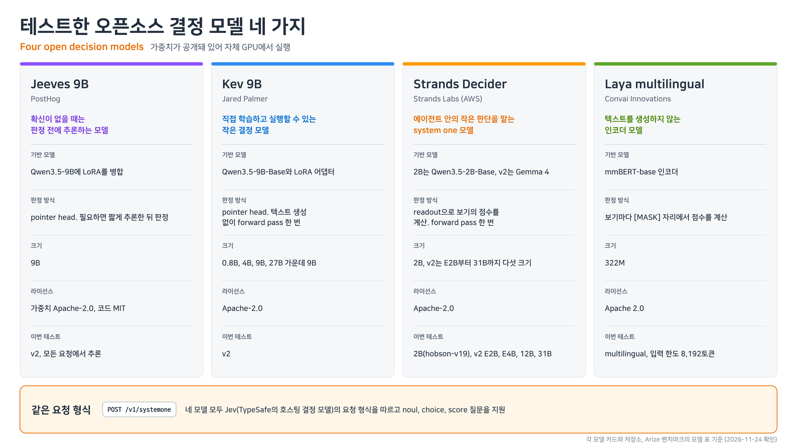
판정 전에 추론하는 모델은 Jeeves 9B 하나입니다. 이 차이가 뒤에 나오는 요청당 시간을 갈랐습니다.
03
Strands Decider v2는 2026년 11월 23일에 공개됐습니다. v1은 Qwen3.5-2B와 Gemma 4를 기반으로 했고 v2는 Gemma 4만 사용하며 가장 큰 31B가 추가됐습니다.
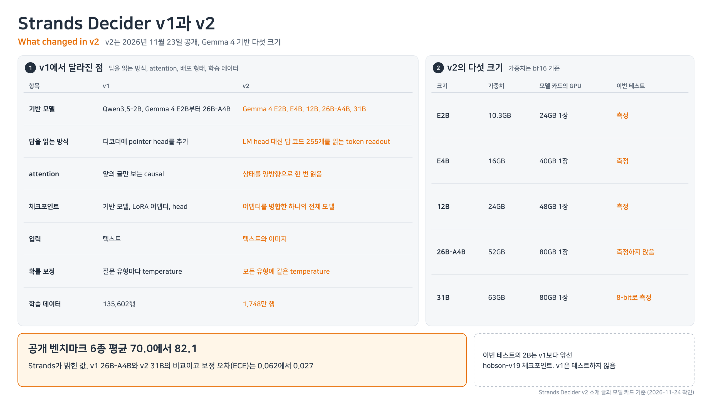
Strands는 공개 벤치마크 6종의 평균이 v1 26B-A4B의 70.0에서 v2 31B의 82.1로 올랐다고 밝혔습니다. Strands가 측정한 값이고 이 글의 테스트와는 데이터가 다릅니다.
이번 테스트의 2B는 v1 이전에 공개된 hobson-v19 체크포인트입니다. v1은 테스트하지 않았으므로 뒤의 결과는 이전 2B와 v2를 비교한 것입니다. v2는 E2B, E4B, 12B를 측정했고 31B는 가중치를 8-bit로 저장해 측정했습니다.
04
문제는 RAGTruth의 환각 탐지입니다. RAGTruth는 검색한 문서와 LLM의 답변, 그리고 답변에서 문서에 근거하지 않은 구간을 표시해 둔 데이터입니다. test split에서 품질 표시가 good인 2,675행을 사용했고 이 가운데 35.3%에 환각이 있습니다.
모든 모델에 같은 질문을 보냈습니다. 답변의 모든 주장이 문맥에 근거하는지를 영어로 묻고 예일 확률을 받았습니다. 데이터의 절반(1,337행)으로 모델마다 임계값을 정하고 나머지 절반(1,338행)으로 정확도를 계산했습니다.
정확도는 균형 정확도로 비교했습니다. 근거 있는 답변을 통과시킨 비율과 환각이 있는 답변을 잡아낸 비율의 평균이고 모든 답변을 통과시키는 판정은 50%가 됩니다.
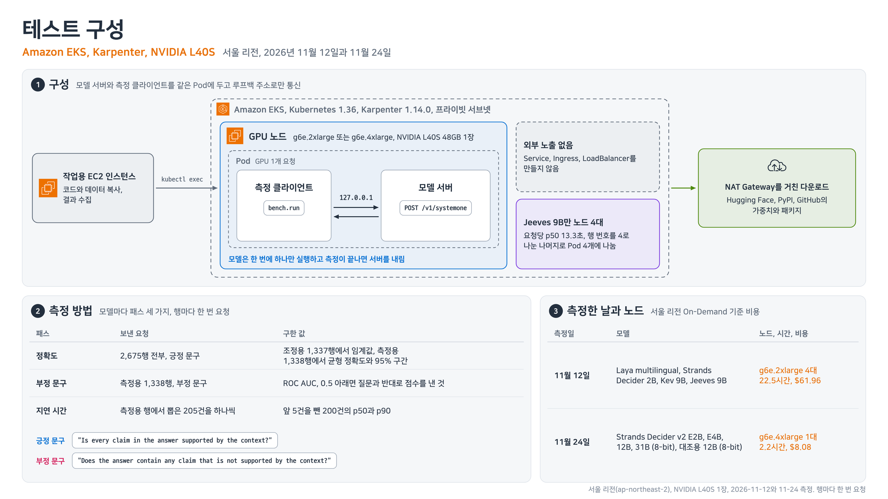
모델 서버는 Amazon EKS의 NVIDIA L40S(48GB) 한 장에서 실행했습니다. Karpenter가 g6e 노드를 만들고 Pod 안에서 측정 클라이언트가 같은 Pod의 모델 서버에 요청을 보냅니다. 2026년 11월 12일에 원문의 네 모델을, 11월 24일에 Strands Decider v2를 테스트했습니다.
05
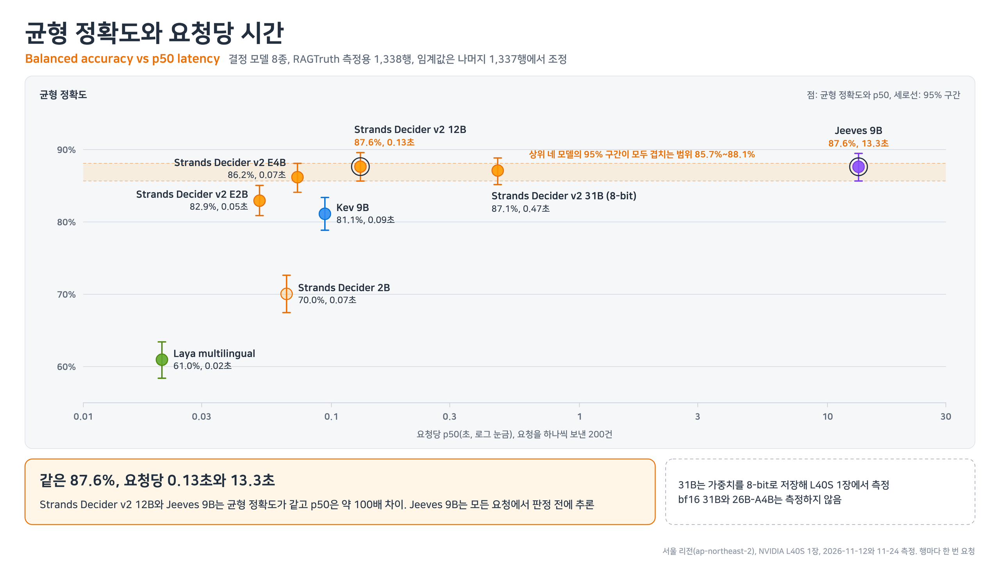
정확도가 가장 높은 Strands Decider v2 12B와 Jeeves 9B는 둘 다 87.6%였습니다. 31B (8-bit)와 E4B까지 상위 네 모델은 95% 구간이 서로 겹쳐 이 데이터로는 순위를 정할 수 없습니다.
차이는 시간에서 났습니다. Jeeves 9B는 요청마다 평균 1,434토큰을 추론한 뒤 판정해 p50이 13.3초였습니다. 나머지 일곱 모델은 0.02초에서 0.47초 사이였고 12B는 Jeeves 9B와 같은 정확도를 0.13초에 냈습니다. 가장 작은 Laya multilingual은 0.02초로 가장 빨랐지만 정확도는 61.0%였습니다.
Strands Decider는 세대가 바뀌며 정확도가 올랐습니다. 이전 2B가 70.0%였고 v2는 가장 작은 E2B도 82.9%입니다.
| 모델 | 균형 정확도 [95% 구간] | 요청당 p50 | 부정 문구 AUC | 조정된 임계값 |
|---|---|---|---|---|
| Strands Decider v2 12B | 87.6% [85.7%, 89.6%] | 0.13초 | 0.92 | 0.2438 |
| Jeeves 9B | 87.6% [85.7%, 89.5%] | 13.3초 | 0.94 | 0.0900 |
| Strands Decider v2 31B (8-bit) | 87.1% [85.2%, 88.8%] | 0.47초 | 0.92 | 0.3568 |
| Strands Decider v2 E4B | 86.2% [84.1%, 88.1%] | 0.07초 | 0.43 | 0.3862 |
| Strands Decider v2 E2B | 82.9% [80.9%, 85.0%] | 0.05초 | 0.68 | 0.3178 |
| Kev 9B | 81.1% [78.9%, 83.4%] | 0.09초 | 0.89 | 0.6976 |
| Strands Decider 2B | 70.0% [67.5%, 72.6%] | 0.07초 | 0.20 | 0.5552 |
| Laya multilingual | 61.0% [58.4%, 63.4%] | 0.02초 | 0.42 | 0.9537 |
표 1. 여덟 모델의 결과 (측정용 1,338행). p50은 요청을 하나씩 보낸 200건의 중앙값이고 부정 문구 AUC와 임계값은 다음 챕터에서 설명
원문과 비교하면 네 모델의 순위는 같았습니다. Strands Decider 2B와 Laya multilingual은 원문 값이 95% 구간 안에 있었고 Jeeves 9B와 Kev 9B는 원문보다 7.3%p와 4.3%p 높았습니다. Jeeves는 원문 뒤에 나온 v2이고 v2의 학습 데이터에 RAGTruth가 추가됐으므로 같은 조건의 비교가 아닙니다.
06
결정 모델을 적용하기 전에 확인할 것이 두 가지 있었습니다. 첫째는 질문 문구입니다. 같은 판단을 근거 없는 주장이 있는지 묻는 부정형으로 바꾸면 예와 아니오의 뜻이 뒤집힙니다. 질문을 이해한 모델이라면 점수도 뒤집혀야 합니다.
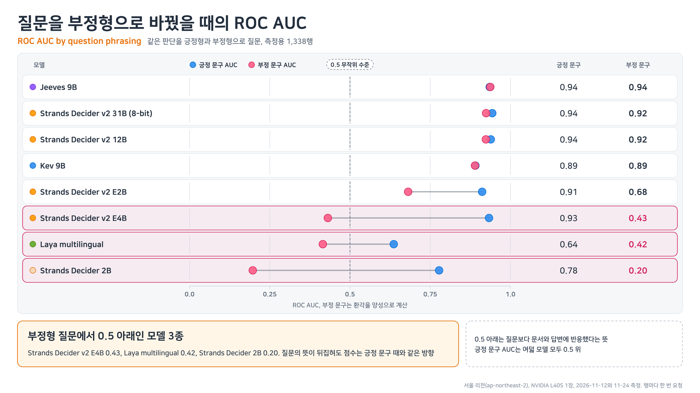
Strands Decider v2 E4B(0.43), Laya multilingual(0.42), Strands Decider 2B(0.20)는 부정형 질문에서 AUC가 0.5 아래였습니다. 질문이 바뀌었는데도 점수는 이전과 같은 방향으로 나왔다는 뜻입니다. Jeeves 9B, v2 12B와 31B (8-bit), Kev 9B는 두 문구에서 비슷한 AUC를 냈습니다.
둘째는 임계값입니다. 결정 모델이 돌려주는 값은 확률이지만 0.5를 기준으로 자르면 여덟 모델 모두 정확도가 내려갔습니다. 데이터에 맞춘 임계값은 Jeeves 9B의 0.0900에서 Laya multilingual의 0.9537까지 모델마다 달랐습니다.
07
31B는 bf16 가중치가 63GB여서 48GB인 L40S 한 장에 올라가지 않습니다. 모델 카드에 따르면 v2는 GPU 여러 장에 나눠 올릴 수 없습니다. 그래서 선형 계층의 가중치만 8-bit로 저장하는 로더를 만들어 측정했고 패키지가 지원하는 구성이 아니므로 31B (8-bit)로 구분해 적었습니다.
8-bit 저장이 답을 얼마나 바꾸는지는 12B로 확인했습니다. 12B를 bf16과 8-bit로 각각 측정하니 균형 정확도 차이는 -0.4%p이고 판정의 99.3%가 같았습니다. 31B의 수치도 bf16과 가까울 것으로 추정하지만 직접 확인한 것은 아닙니다.
31B (8-bit)와 12B의 균형 정확도 차이는 -0.5%p이고 95% 구간 [-2.0%p, +0.9%p]가 0을 포함합니다. 12B가 틀린 148행 가운데 112행은 31B (8-bit)도 틀렸습니다. 놓친 환각은 구간이 하나뿐인 답변에 몰려 있었고 상위 네 모델 모두 이런 답변의 16.4%에서 23.7%를 놓쳤습니다. 이 데이터에서는 모델 크기보다 환각이 얼마나 짧고 미묘한지가 판정을 갈랐습니다.
08
09
이번 결과를 상황별로 정리했습니다. 수치는 모두 RAGTruth와 L40S 한 장에서 나온 값입니다.
| 상황 | 먼저 확인할 모델 | 이번 테스트의 값 |
|---|---|---|
| 정확도가 가장 중요할 때 | Strands Decider v2 12B | 87.6%, p50 0.13초. Jeeves 9B와 같은 정확도 |
| 요청당 0.1초 안에 답해야 할 때 | Strands Decider v2 E4B | 86.2%, p50 0.07초. 질문은 긍정형으로 고정 |
| 질문을 부정형으로도 사용할 때 | Strands Decider v2 12B, Kev 9B, Jeeves 9B | 부정 문구 AUC 0.92, 0.89, 0.94 |
| GPU 메모리가 작을 때 | Strands Decider v2 E2B | 82.9%, p50 0.05초, GPU 메모리 10.0GiB |
| 31B를 검토할 때 | Strands Decider v2 12B와 먼저 비교 | 이 데이터에서는 12B보다 높지 않음 |
표 2. 상황별로 먼저 확인할 모델
모델을 바꿀 때는 임계값을 다시 정해야 합니다. 이전 2B의 임계값은 0.5552이고 v2는 0.2438에서 0.3862여서 그대로 옮기면 판정이 달라집니다. 질문 문구를 바꿀 때도 같은 데이터로 다시 측정해야 합니다. 어느 모델이든 운영 데이터 일부로 임계값을 정하고 나머지 데이터에서 확인하는 것을 권고합니다.
A RAG application has to check on every request whether the answer is grounded in the retrieved documents, and handing that check to a large LLM adds time and cost to every request. A decision model is a small model built to make only this kind of decision quickly, and since Jev from TypeSafe came out in September 2026, open models have followed one after another.
There are several open decision models, and they range from 322M to 31B in size. To decide which one to pick, I tested eight of them on the same hallucination detection problem. The two most accurate models scored the same 87.6%, and their time per request was 0.13 s and 13.3 s, about 100 times apart.
Before the results, this post explains what a decision model is and how the open models in the test differ.
01
A decision model does not generate text. Given something to read (the state), a question and the options, it computes a probability for each option and returns it. Where an LLM judge writes its verdict in sentences, a decision model answers in one forward pass.
According to the Arize benchmark, the top decision models are within the noise of an LLM judge on hallucination detection, and the LLM judge costs 60 to 400 times more.
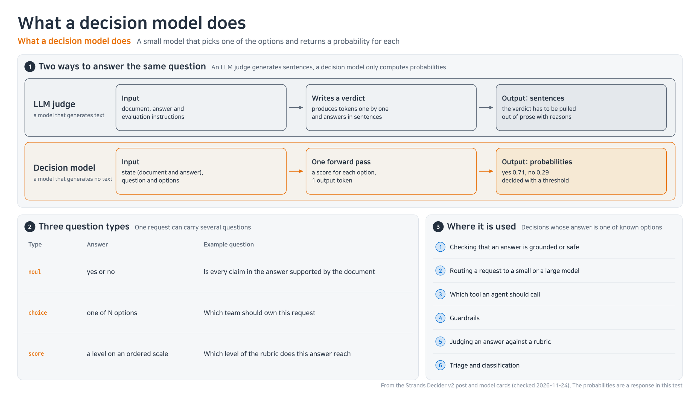
There are three question types: noul for yes or no, choice for one of several options, and score for a level on an ordered scale. The model fits decisions whose answer is among known options, so it is used for grounding checks, guardrails, model routing, tool selection and judging answers.
For hallucination detection, the state holds the retrieved document and the answer, and there is one yes-or-no question.
POST /v1/systemone
{
"state": {"context": "...", "answer": "..."},
"questions": {
"q": {"type": "noul", "instructions": "Is every claim in the answer supported by the context?"}
}
}This is what Strands Decider v2 E2B returned for that request.
{
"model": "strands-decider-E2B-gemma4-v2-2611",
"answers": {"q": {"type": "noul", "noul": 0.7146}},
"usage": {"input_tokens": 1186, "output_tokens": 1},
"latency_ms": 59.43
}The noul value, 0.7146, is the probability of yes. At or above the threshold the answer is judged as grounded in the document. The output is 1 token, so this request took 0.06 s.
An outgoing inspection at a factory is a useful comparison. An LLM judge is an inspector who writes a report for every product, and a decision model is an inspector who looks at a product and states the probability that it passes as one number. Where the passing line sits is decided by the factory, not by the inspector, and that line is the threshold. One thing differs from a real inspector. A decision model gives a different number for the same product when the question is worded differently.
This request format was set by Jev, the hosted model from TypeSafe. The open models that came later follow the same format, so one piece of client code called every model in this test. Strands calls this kind of model a system one model.
02
I tested four models whose weights are public and run on your own GPU. They are the four that the decision model benchmark Arize published on October 7, 2026 (the original, from here on) ran locally out of its eight models.
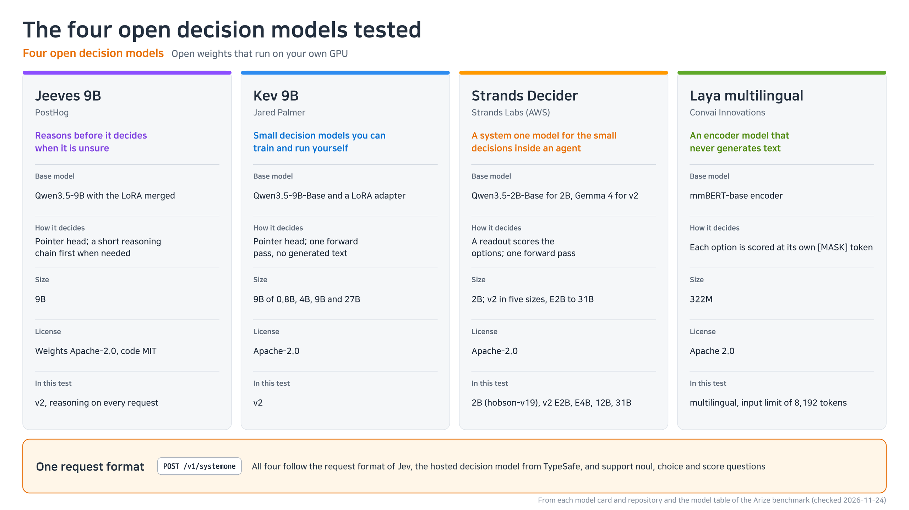
Jeeves 9B is the only model that reasons before it decides. That difference is what separated the time per request below.
03
Strands Decider v2 was released on November 23, 2026. v1 was built on Qwen3.5-2B and Gemma 4, while v2 uses Gemma 4 only and adds 31B as its largest size.
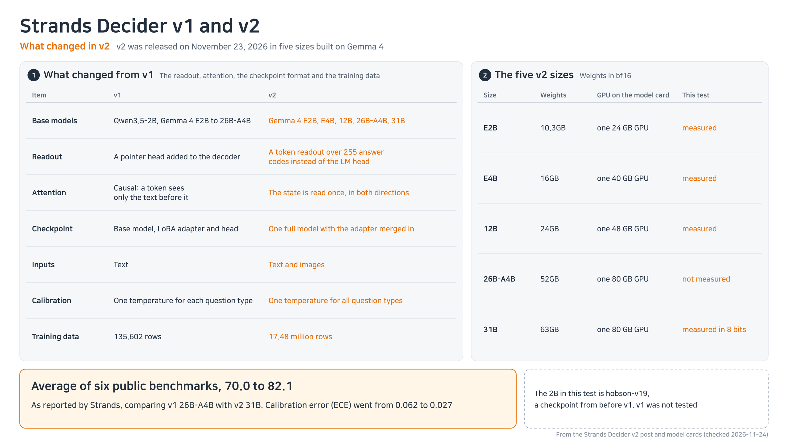
Strands reports that the average of six public benchmarks rose from 70.0 for v1 26B-A4B to 82.1 for v2 31B. Those are Strands' own measurements, on data other than the test in this post.
The 2B in this test is hobson-v19, a checkpoint published before v1. I did not test v1, so the results below compare the earlier 2B with v2. Of v2 I measured E2B, E4B and 12B, and 31B with its weights stored in 8 bits.
04
The problem is hallucination detection on RAGTruth. RAGTruth holds retrieved documents, the answers of LLMs, and marks on the spans of an answer that the documents do not support. I used the 2,675 rows of the test split whose quality is marked good, and 35.3% of them contain a hallucination.
Every model got the same question. It asks, in English, whether every claim in the answer is supported by the context, and the model returns the probability of yes. Half of the data (1,337 rows) set the threshold for each model, and the other half (1,338 rows) gave the accuracy.
Accuracy is compared as balanced accuracy. It is the mean of the share of supported answers that pass and the share of hallucinated answers that are caught, and a judge that passes every answer scores 50%.
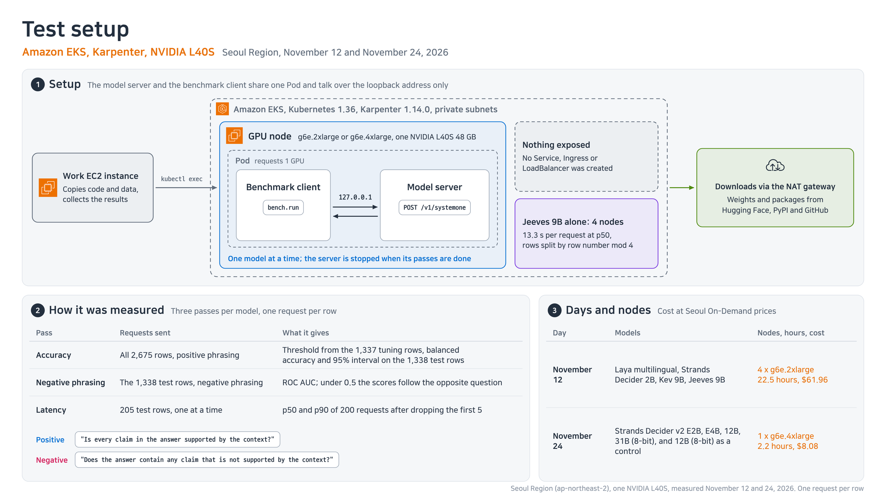
The model servers ran on one NVIDIA L40S (48 GB) in Amazon EKS. Karpenter creates a g6e node, and inside the Pod the benchmark client sends requests to the model server in the same Pod. I tested the four models of the original on November 12, 2026 and Strands Decider v2 on November 24.
05
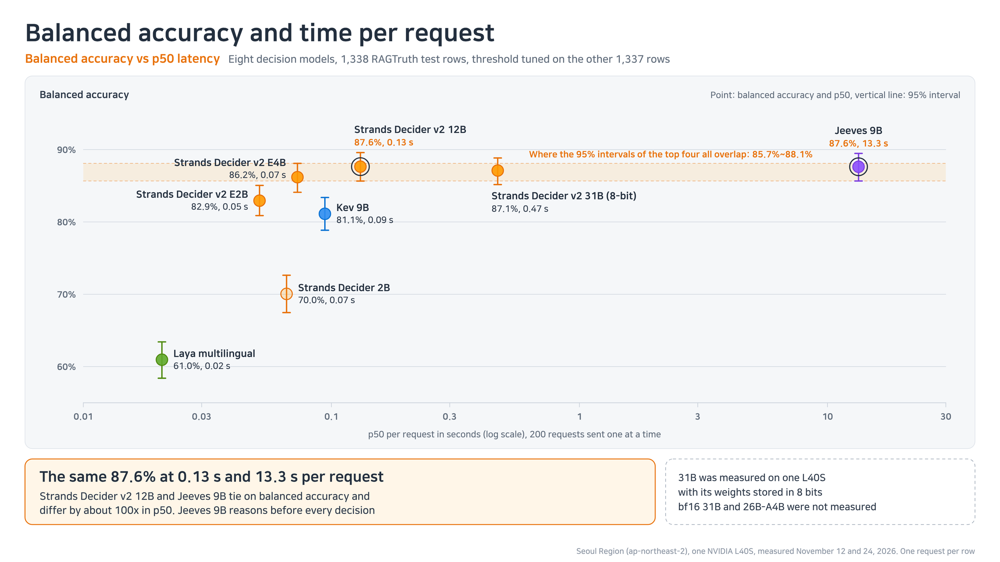
The two most accurate models, Strands Decider v2 12B and Jeeves 9B, both scored 87.6%. With 31B (8-bit) and E4B, the 95% intervals of the top four overlap, so this data cannot put them in an order.
The difference was in time. Jeeves 9B reasons for 1,434 tokens on average before each decision, and its p50 was 13.3 s. The other seven were between 0.02 s and 0.47 s, and 12B reached the accuracy of Jeeves 9B in 0.13 s. Laya multilingual, the smallest, was the fastest at 0.02 s but scored 61.0%.
The accuracy of Strands Decider rose with the new generation. The earlier 2B scored 70.0%, and E2B, the smallest v2, scores 82.9%.
| Model | Balanced accuracy [95% interval] | p50 per request | AUC, negative phrasing | Tuned threshold |
|---|---|---|---|---|
| Strands Decider v2 12B | 87.6% [85.7%, 89.6%] | 0.13 s | 0.92 | 0.2438 |
| Jeeves 9B | 87.6% [85.7%, 89.5%] | 13.3 s | 0.94 | 0.0900 |
| Strands Decider v2 31B (8-bit) | 87.1% [85.2%, 88.8%] | 0.47 s | 0.92 | 0.3568 |
| Strands Decider v2 E4B | 86.2% [84.1%, 88.1%] | 0.07 s | 0.43 | 0.3862 |
| Strands Decider v2 E2B | 82.9% [80.9%, 85.0%] | 0.05 s | 0.68 | 0.3178 |
| Kev 9B | 81.1% [78.9%, 83.4%] | 0.09 s | 0.89 | 0.6976 |
| Strands Decider 2B | 70.0% [67.5%, 72.6%] | 0.07 s | 0.20 | 0.5552 |
| Laya multilingual | 61.0% [58.4%, 63.4%] | 0.02 s | 0.42 | 0.9537 |
Table 1. Results of the eight models (1,338 test rows). The p50 is the median of 200 requests sent one at a time, and the next chapter explains the AUC on the negative phrasing and the threshold
Against the original, the four models rank in the same order. For Strands Decider 2B and Laya multilingual the original value is inside the 95% interval, and Jeeves 9B and Kev 9B came out 7.3 pp and 4.3 pp above the original. Jeeves is v2, released after the original, and RAGTruth was added to the training data of v2, so this is not a like-for-like comparison.
06
Two things have to be checked before applying a decision model. The first is the wording of the question. If the same judgment is asked in a negative form, whether there is a claim that is not supported, the meaning of yes and no is reversed. A model that understands the question should reverse its scores too.
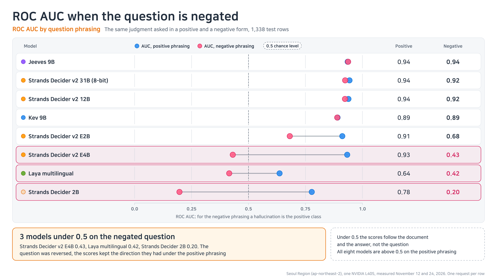
Strands Decider v2 E4B (0.43), Laya multilingual (0.42) and Strands Decider 2B (0.20) had an AUC under 0.5 on the negative question. That means the scores kept their earlier direction although the question had changed. Jeeves 9B, v2 12B and 31B (8-bit), and Kev 9B had about the same AUC on both phrasings.
The second is the threshold. What a decision model returns is a probability, but cutting it at 0.5 lowered the accuracy of all eight models. The threshold fitted to the data differed by model, from 0.0900 for Jeeves 9B to 0.9537 for Laya multilingual.
07
31B has 63 GB of bf16 weights and does not fit one L40S with 48 GB. According to the model cards, v2 cannot be split over several GPUs. So I wrote a loader that stores only the weights of the linear layers in 8 bits and measured with that, and because the package does not support this configuration the result is labeled 31B (8-bit).
I used 12B to check how far 8-bit storage moves the answers. Measured in bf16 and in 8 bits, 12B differs by -0.4 pp in balanced accuracy, and 99.3% of the decisions are the same. I estimate that the 31B figures are close to bf16 as well, but I did not confirm it directly.
The difference in balanced accuracy between 31B (8-bit) and 12B is -0.5 pp, and the 95% interval [-2.0 pp, +0.9 pp] includes 0. Of the 148 rows 12B got wrong, 31B (8-bit) also got 112 wrong. The missed hallucinations were concentrated in answers with a single hallucinated span, and each of the top four models missed 16.4% to 23.7% of those answers. On this data, how short and subtle the hallucination is decided the outcome more than the size of the model.
08
09
Here are the results by situation. Every figure comes from RAGTruth and one L40S.
| Situation | Model to check first | Value in this test |
|---|---|---|
| Accuracy matters most | Strands Decider v2 12B | 87.6%, p50 0.13 s; the same accuracy as Jeeves 9B |
| An answer is needed within 0.1 s | Strands Decider v2 E4B | 86.2%, p50 0.07 s; keep the question positive |
| Questions are also asked in a negative form | Strands Decider v2 12B, Kev 9B, Jeeves 9B | AUC 0.92, 0.89, 0.94 on the negative phrasing |
| GPU memory is small | Strands Decider v2 E2B | 82.9%, p50 0.05 s, 10.0GiB of GPU memory |
| 31B is being considered | Compare with Strands Decider v2 12B first | Not higher than 12B on this data |
Table 2. Which model to check first in each situation
Changing the model means setting the threshold again. The threshold of the earlier 2B is 0.5552 and those of v2 run from 0.2438 to 0.3862, so carrying the old value over changes the decisions. When the wording of the question changes, the measurement has to be repeated on the same data. Whichever model is used, I recommend setting the threshold on part of the production data and checking it on the rest.